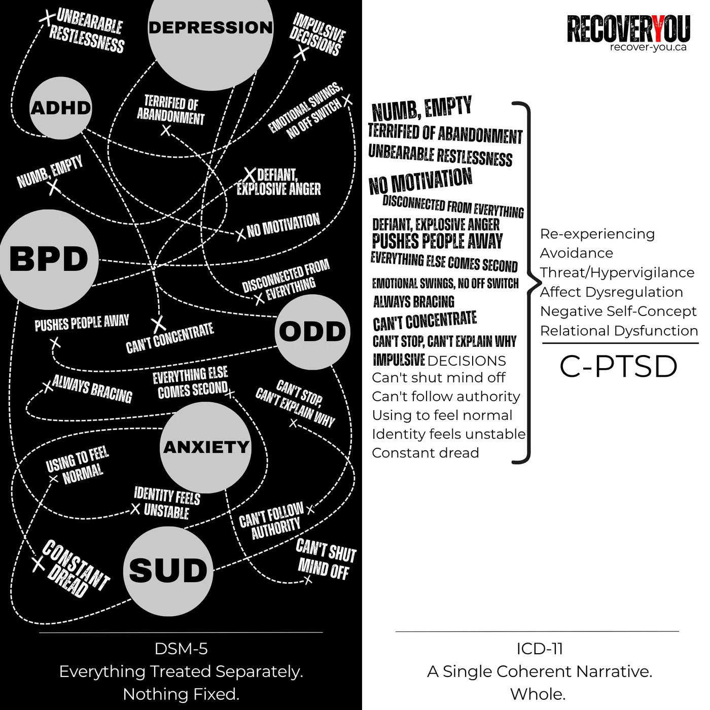

The Diagnostic Divide
Why the DSM missed C-PTSD — and how the ICD finally caught up.
In a World of Mental Health Labels
Why C-PTSD Changed Everything
There's a particular irony in the fact that I'm the one writing this.
I've spent most of my life on the receiving end of these manuals — collecting diagnoses the way some people collect parking tickets. ADHD here. Generalized Anxiety there. Alcohol and substance use somewhere in the middle. Each one handed to me by someone who had presumably read the relevant pages with far more clinical composure than I ever could. I wasn't reading the DSM. The opposite had been true. For all my life, it had been effectively reading and interpreting me.
So the fact that I've now spent genuine time pulling apart two international diagnostic frameworks — comparing their structures, tracing their disagreements, reading the footnotes — is not something I would have predicted. But here we are. And being clinically overwhelmed by something for most of your life doesn't strip you of the right to eventually look at it clearly. If anything, it earns you one.
Reading my diagnoses used to feel like reading a Chinese horoscope about myself — half of it eerily accurate, the other half a confident swing and a miss. I'd catch myself trying to make the descriptions fit, convincing myself "yep, that must be me," even when it didn't register with me at all. Nothing explained the identity collapse, the chronic guilt, the emotional whiplash, or why recovery felt like something you performed.
Then I found Judith Herman's work — immense validation from start to finish. The experience was something like reading a lottery ticket number by number, growing more excited as each one matched. Except this lottery ticket offered no money. In a lot of ways, it offered something better: a framework for finally understanding yourself.
But validation and frustration arrived together. To read Herman — and van der Kolk, who was pushing the same case — is to realize how long this understanding existed before it reached you. And then to learn that the DSM rejected their proposals. Twice. That the people who named your experience most accurately spent decades being told by the official record that the evidence wasn't sufficient. Their frustration and mine turned out to rhyme.
What follows is what I found when I started pulling on that thread.
In Alberta and most of North America, the DSM-5 still governs official diagnosis. But the ICD-11 — the global standard — now recognizes C-PTSD as its own distinct condition. That shift matters more than it might sound. It means the problem was never you, your symptoms, or your story. It's that the system took decades to catch up to what survivors already knew.

DSM vs. ICD
Both manuals exist to standardize diagnosis. When it comes to complex trauma, they arrived at very different conclusions.
-
DSM U.S.-based
Produced by the American Psychiatric Association. It governs North American diagnosis and insurance billing — which means whatever the DSM recognizes or ignores doesn't just shape academic debate. It shapes whether people get the right treatment.
-
ICD Global
Published by the World Health Organization. It covers all medical and mental health conditions and is used by governments and public health systems worldwide — including, increasingly, by Canadian clinicians working outside strict billing constraints.
How they diverged around trauma
Both treated PTSD as a response to a single, discrete traumatic event — combat, disaster, assault. There was no framework for trauma that was chronic, relational, or developmental. If your damage accumulated slowly over years, the manuals didn't have a box for you.
Expanded PTSD criteria and added a dissociative subtype — genuine progress. But it still rejected both DESNOS and Developmental Trauma Disorder. In practice, that meant complex-trauma survivors continued collecting multiple separate diagnoses rather than one accurate one. The picture was there. Nobody connected the dots.
Formally recognized Complex PTSD (C-PTSD) as its own distinct diagnosis — not a subtype of PTSD, not a personality disorder, but a condition that reflects what long-term, repeated, interpersonal trauma actually does to a person.
The global system caught up to what trauma clinicians and survivors had understood for decades. The North American system is still working on it.
The DSM Isn’t Wrong — It’s Just Not Built for the Whole Story
The DSM isn't the villain here. It does exactly what it was designed to do: describe symptoms clearly enough that clinicians, researchers, and systems are all working from the same page. In that respect, it earns its name — it is a diagnostic manual. A very good one, for what it was built to handle.
The problem isn't that it's broken. The problem is that people aren't machines. If you bring your car to a mechanic after blowing the same tire on the same curb for the second time this year, they'll replace the tire, maybe a tie rod, and send you on your way. Your mechanic isn't handing you a pamphlet for driving classes. Nor are they asking why you keep clipping that curb. Nobody looks at the pattern. The part got fixed. The reason it keeps failing didn't come up.
The DSM correctly identifies the part that failed.
It was never designed to ask why it keeps failing.
That's the limitation for trauma survivors. Symptoms can be catalogued — but the story that produced them often goes unspoken. Anxiety, depression, substance use, emotional volatility, attention problems — all can be "correctly" diagnosed using DSM criteria while the actual driver — chronic relational trauma — goes completely unaddressed. You leave with an accurate label for the symptom and no map to what's underneath it.
This isn't an indictment. It's a description of a design constraint. For most mental health challenges, DSM-style symptom mapping works well. But for developmental trauma — the kind that shapes identity, attachment, and how the nervous system calibrates to the world — a symptom checklist will never tell the full story. It can't. That's not what it was built for.
That's what makes the ICD-11's recognition of C-PTSD significant. Not because the DSM got something wrong, but because trauma survivors finally have a diagnostic framework that that better reflects what is happening and why it started happening in the first place. That distinction is the difference between managing symptoms and actually treating the wound.
Where the DSM stops at symptoms, the ICD goes further by naming the deeper wounds to emotion, identity, and relationships that long-term trauma leaves behind.
DSM Said “No” (Twice)
C-PTSD didn't fail to appear in the DSM by accident or oversight. It was proposed. It was reviewed. It was rejected. Twice. By the same body. With decades of mounting evidence behind it each time. That's worth sitting with.
-
DSM-IV (1994) Rejected
The proposal for DESNOS (Disorders of Extreme Stress, Not Otherwise Specified) — an early framework for what we now call C-PTSD — was rejected. The research supporting it was acknowledged. The diagnosis was not.
-
DSM-5 (2013) Rejected
Nearly two decades later, Developmental Trauma Disorder (DTD) — focused specifically on the effects of chronic relational trauma in children — was proposed again. Rejected again. The committee cited insufficient evidence, a conclusion that remains contested by the clinicians who submitted it.
These weren't minor procedural debates. Each rejection meant millions of trauma survivors continued being scattered across multiple partial diagnoses — depression here, anxiety there, substance use somewhere else — with no single framework to explain why all of those things were happening to the same person at the same time. The ICD-11's recognition of C-PTSD in 2022 wasn't a new discovery. It was a correction that was thirty years overdue.
Alberta Was Paying Attention
In 2014 — the same year the DSM-5 rejection of Developmental Trauma Disorder was still fresh — two separate bodies of work came out of this province that pointed in exactly the same direction.
A commentary from the University of Alberta's Trauma and Attachment Program called the DSM's exclusion of Developmental Trauma Disorder a significant oversight — and went further. They argued that if only one trauma diagnosis were to exist, it would more accurately be developmental in nature, given how chronic early trauma reshapes a person's biology, psychology, and social functioning across an entire lifetime. Read the commentary here.
That same year, the Alberta Adverse Childhood Experiences Survey — the first provincial ACE study ever conducted here — published its findings from 1,200 Albertan adults. The results were stark: Albertans who had experienced three or more ACEs were six times more likely to be diagnosed with a mental health condition or substance dependence in adulthood. Nearly 60% of all mental health and addiction diagnoses in the sample were attributable to early adverse childhood experiences. Read the Alberta ACE Survey here.
Two different research teams. Two different methodologies. One province. The same conclusion: early trauma is the through-line — and the system wasn’t built to name it.
I think they were right. Both of them.
2013: A Big Year for the DSM
In 2013, the DSM-5 rejected Developmental Trauma Disorder for the second time — killing the closest thing to C-PTSD the manual had ever considered. But something else happened in that same revision cycle that I haven't been able to stop thinking about.
That same year, DSM-5 added a fourth symptom cluster to the classical definition of PTSD: negative alterations in cognition and mood. For decades, PTSD had been built on three clusters — re-experiencing, avoidance, and hyperarousal. The fourth covered territory that should sound familiar by now: persistent negative beliefs about oneself, distorted blame, diminished interest, feelings of detachment, an inability to experience positive emotions.
In the same year they rejected the diagnosis that would have named complex trauma directly, they quietly absorbed a portion of its symptom domain into the existing PTSD framework.
This is my opinion — I want to be clear about that. But it's hard not to read Criterion D as a half-measure. A way of acknowledging that the classical PTSD definition wasn't capturing the full picture without actually recognizing C-PTSD as its own condition. The identity wounds, the relational instability, the chronic dysregulation — those still don't have a home in the DSM. But the mood and cognition cluster gestures toward them.
Whether that was a deliberate compromise, a limit of the evidence threshold, or just how large institutional frameworks evolve — I can't say. What I can say is that the timing is worth noting. They knew something was missing. The fourth cluster is what they did about it.
There's a second problem with that move that rarely gets discussed. Adding the fourth cluster didn't just fall short of recognizing C-PTSD — it quietly raised the bar for a classical PTSD diagnosis in the process. Under DSM-III, three clusters were required. Under DSM-5, all four have to be met simultaneously. Someone presenting with significant avoidance, a dysregulated nervous system, and a clear trauma history might not qualify anymore — not because their experience is less real, but because the criteria got more demanding as they got more detailed.
The ICD-11 went in the opposite direction. It kept the original three clusters intact and built C-PTSD on top of them as a separate diagnosis — requiring those three, plus three more. The classical definition of PTSD wasn't restructured to accommodate the revision. It was preserved, and the revision was added above it. The DSM expanded its criteria and captured less. The ICD held its criteria steady and captured more.
What this shows. A structural comparison of two sets of published criteria — not data, and not a measurement of anything. The blocks are symptom clusters, not individual symptoms; each cluster has its own internal requirements. Criteria from DSM-5 (NCBI) and ICD-11 (WHO).
I'm not arguing that the ICD gets everything right and the DSM gets everything wrong. That's not the point. My question is narrower: why hasn't the DSM picked up C-PTSD?
The usual answer is symptom overlap — and the overlap is real. C-PTSD shares the three original clusters with PTSD: re-experiencing, avoidance, and hyperarousal. But it also requires three additional clusters on top — affect dysregulation, negative self-concept, and relational disturbances — and all six must be present for the diagnosis. That's not overlap. That's a higher, more specific threshold. Of course the conditions share symptoms. One contains the other, plus more.
And here's where I land: if the DSM wants to keep them separate, fine. That's a defensible position. But if that's the approach, then the multiple discrete diagnoses it produces have to be treated as connected, coordinated, and focused on root cause. Otherwise the symptoms will ruthlessly persist — because you're managing the outputs of an injury that nobody is naming or treating directly.

PTSD and C-PTSD Across DSM and ICD
Same phenomenon. Two frameworks. Only one gives complex trauma its own home.
Look at the left side of that diagram long enough and you start to feel it — the weight of being handed five different explanations for the same person. What the DSM's fragmented approach does, beyond the clinical inconvenience, is leave the door wide open for a particular and crushing conclusion: I am broken in multiple, compounding ways. That I have a defective brain. That the sum of all these labels is simply what I am.
The C-PTSD lens moves the frame entirely. It doesn't look at the same picture and see malfunction. It sees adaptation. A nervous system that learned to survive the conditions it was given. The symptoms aren't evidence that something went wrong with you — they're evidence that something was done to you, and that you found a way to keep going anyway. Those are two completely different animals. And which one you're handed matters more than most people realize.
- Both the DSM and ICD originally built PTSD around three symptom clusters: re-experiencing, avoidance, and hyperarousal.
- DSM-5 (2013) expanded those criteria — adding a fourth cluster and a dissociative subtype — but stopped short of recognizing complex trauma as its own condition.
- ICD-11 (2022) took a different path entirely: it introduced C-PTSD as its own separate diagnosis alongside PTSD, rather than expanding an existing one.
- C-PTSD — or its clinical predecessors — was proposed to the DSM twice. Denied both times.
- Even with the expanded criteria, the DSM still leaves key elements of complex trauma underrepresented: identity wounds, relational instability, and the chronic dysregulation that doesn't fit neatly into any single symptom category.
Read the DSM (North America) PTSD criteria here.
Read the ICD-11 (WHO) PTSD and C-PTSD overview here.
If you've read the DSM criteria closely, you'll notice it runs from A through H — which makes it look like far more than four categories. That confused me too. Only B, C, D, and E are actual symptom clusters. The others — A, F, G, H — cover exposure criteria, duration, functional impairment, and exclusions. So: four clusters. Eight letters. Classic DSM energy.
The Pattern Beneath the Diagnoses
A diagnosis can be genuinely useful — it gives language to what you're experiencing and helps clinicians coordinate care. But it's still a tool. Not a verdict. Not an identity. And for a lot of people with complex trauma histories, it's a tool that's been consistently reaching for the wrong shelf.
Most survivors with chronic trauma don't get one diagnosis. They collect them — depression, anxiety, substance use, personality disorders — each one describing a slice of the picture without any of them naming what's underneath. You end up with a folder full of explanations and still no map to the thing that's actually driving all of it.
Different offices. Different labels. Same story underneath.
For many survivors, that story finally starts to make sense when viewed through the lens of Complex PTSD (ICD-11). Not because it replaces every other diagnosis — but because it explains why so many symptoms cluster together in the same person, and why treatment keeps falling short when the trauma underneath goes unaddressed.
That's not how it works. You don't need a perfectly worded diagnosis to begin healing. If your nervous system has been shaped by long-term trauma, you are allowed to start recovering from it right now — whether or not anyone has written "C-PTSD" in your file. The work doesn't wait for the paperwork.
Reflection Point
Why does this matter?
Understanding where your experience sits in relation to DSM-5 and ICD-11 isn't an academic exercise. It changes what you ask for, what you expect from care, and how you talk about what's actually happened to you.
Having the right language doesn't fix anything on its own. But it gets you into the right conversation — and the right conversation is where things start to shift.
// How to Use This Knowledge
Before the practical bit — one thing worth saying clearly: many clinicians are just as frustrated by these gaps as you are. They're working inside systems that constrain their time, their training, and what they're able to formally diagnose — even when they can see complex trauma plainly in front of them. This page isn't an indictment of individual therapists. It's about giving you — and the people trying to help you — better language to work with the reality you're both already navigating.
-
In Therapy
If you've been diagnosed with ADHD, GAD, depression, or a personality disorder, you don't have to accept that as the whole story. Try:
"I've been reading about C-PTSD in the ICD-11, and it fits my experience of long-term relational trauma better than the current diagnosis does. Can we explore treatment through that lens?"
Most trauma-informed clinicians will know exactly what you're pointing at.
-
Self-Advocacy
You don't need the diagnosis in your file to use the language. Phrases like "difficulties with emotional regulation," "negative self-concept connected to early trauma," or "chronic relational trauma" signal to the right clinicians that you understand what you're dealing with and what kind of help you're looking for. That specificity changes the conversation.
-
Choosing Care
When you're evaluating a therapist or program, don't just ask "do you treat PTSD?" — almost everyone will say yes. Ask:
"What is your approach to complex or developmental trauma?"
The answer will tell you quickly whether they're working at the symptom level or the root level. Those are very different things.
-
Navigating Alberta's System
Your clinician may diagnose you using broader DSM categories like Unspecified Trauma- and Stressor-Related Disorder even when what they're actually seeing is complex trauma. That's not a failure of the clinician — it's a constraint of the system. Those diagnoses can still fully support trauma-focused treatment — EMDR, ART, somatic work, regulation skills. The label doesn't have to be perfect for the care to be right. And trauma, addiction, and mental health services here are still largely siloed — understanding the C-PTSD framework gives you language to bridge those silos yourself.
If your current diagnosis is PTSD rather than C-PTSD, the treatment approaches that actually help — EMDR, TF-CBT, DBT, IFS, somatic work, nervous system regulation, attachment-focused therapy — overlap heavily regardless of which label is in your file. The C-PTSD framework here is meant to give you clarity and language, not a reason to stall until someone updates your chart. Recovery doesn't require a specific diagnostic code. It requires showing up.
If you were hoping for ammo to roast your doctor with a “Checkmate, DSM” speech — this ain’t that.
This is about building a bridge, not burning one to the ground.
The system is imperfect. The people inside it, mostly, are trying. The better your language, the better your odds of finding the ones who can actually help.
Where to Next?
Follow the next step in order, or branch out into related topics.
- American Psychiatric Association. (2013). Diagnostic and Statistical Manual of Mental Disorders (5th ed.). American Psychiatric Publishing. The current US diagnostic standard — which does not include Complex PTSD as a distinct diagnosis, instead subsuming its features across PTSD specifiers and personality disorder categories. Understanding its structure is essential to understanding why so many trauma survivors feel their experience isn't named in the system they encounter. View at APA
- World Health Organization. (2019). International Classification of Diseases, 11th Revision (ICD-11): Post-Traumatic Stress Disorder (6B40) and Complex PTSD (6B41). WHO. The ICD-11 formally recognized C-PTSD in 2019 as a diagnosis distinct from PTSD — requiring the core PTSD criteria plus three additional clusters (affect dysregulation, persistent negative self-concept, relational disturbances) arising from prolonged, repeated trauma. Its inclusion validated decades of clinical observation and established a diagnostic framework that better fits the reality of developmental trauma survivors. View ICD-11 Entry
- Cloitre, M., Garvert, D. W., Brewin, C. R., Bryant, R. A., & Maercker, A. (2013). Evidence for proposed ICD-11 PTSD and complex PTSD: a latent profile analysis. European Journal of Psychotraumatology, 4(1), 20706. Landmark latent profile analysis providing empirical evidence that PTSD and C-PTSD are statistically distinct presentations — not points on a single continuum. Directly substantiates the ICD-11's decision to recognize them separately, and the clinical argument that the two require different treatment approaches. View via DOI
- Van der Kolk, B. A., Roth, S., Pelcovitz, D., Sunday, S., & Spinazzola, J. (2005). Disorders of extreme stress: the empirical foundation of a complex adaptation to trauma. Journal of Traumatic Stress, 18(5), 389–399. The empirical foundation paper for Disorders of Extreme Stress Not Otherwise Specified (DESNOS) — documenting the symptom clusters arising from prolonged developmental trauma that the DSM's single-incident PTSD framework cannot adequately capture. A foundational argument for the C-PTSD diagnosis that the DSM-5 declined and the ICD-11 accepted. View via DOI
- Spinazzola, J., Van der Kolk, B. A., & Ford, J. D. (2018). Complex trauma exposure and symptoms in children and adolescents: developmentally sensitive diagnostic considerations. Journal of Nervous and Mental Disease, 206(11), 873–880. Examines the case for Developmental Trauma Disorder — a proposed diagnosis for children and adolescents whose complex trauma presentations the existing DSM framework fails to capture — extending the C-PTSD argument into the paediatric context where the gap between diagnosis and clinical reality is most consequential. View via PubMed
- Ford, J. D. (2017). Complex PTSD: research directions for nosology, clinical assessment, and treatment. European Journal of Psychotraumatology, 8(sup7), 1323022. Reviews the state of complex PTSD research across nosology, assessment, and treatment — providing the clinical and scientific rationale for its recognition as a distinct condition and outlining the implications of that recognition for how treatment should be designed and delivered. View via PubMed
- Cloitre, M., Courtois, C. A., Charuvastra, A., Carapezza, R., Stolbach, B. C., & Green, B. L. (2011). Treatment of complex PTSD: results of the ISTSS expert clinician survey on best practices. Journal of Traumatic Stress, 24(6), 615–627. Expert consensus establishing phase-based, sequenced treatment as the clinical standard for C-PTSD — directly addressing what the diagnostic gap costs in practice: when the diagnosis is absent or misapplied, the treatment model that follows it is also misapplied. View via DOI
- Ford, J. D., & Courtois, C. A. (2021). Posttraumatic Stress Disorder: Scientific and Professional Dimensions (2nd ed.). Academic Press. Comprehensive academic and clinical reference covering PTSD and C-PTSD across nosology, neurobiology, assessment, and treatment — providing the scholarly scaffolding for understanding the full significance of the DSM/ICD divergence and its clinical downstream effects. View on Goodreads
- Herman, J. L. (1992). Trauma and Recovery: The Aftermath of Violence — from Domestic Abuse to Political Terror. Basic Books. The text that first proposed Complex PTSD as a distinct diagnostic category — making the clinical and human argument that the DSM's single-incident framework was structurally inadequate for survivors of prolonged interpersonal trauma, decades before the ICD-11 formally validated that argument. View on Goodreads
- SAMHSA. (2014). SAMHSA's Concept of Trauma and Guidance for a Trauma-Informed Approach. HHS Publication No. (SMA) 14-4884. Foundational federal policy document establishing the trauma-informed care framework — and implicitly acknowledging the diagnostic gap this page addresses: systemic recognition of trauma's role in behavioral health does not automatically produce diagnostic tools adequate to name it. Download PDF
These references trace how the DSM-5 and ICD-11 diverged in defining trauma-related disorders, why C-PTSD was validated through ICD-11, and how clinicians and advocates are bridging the diagnostic gap for survivors of chronic trauma.